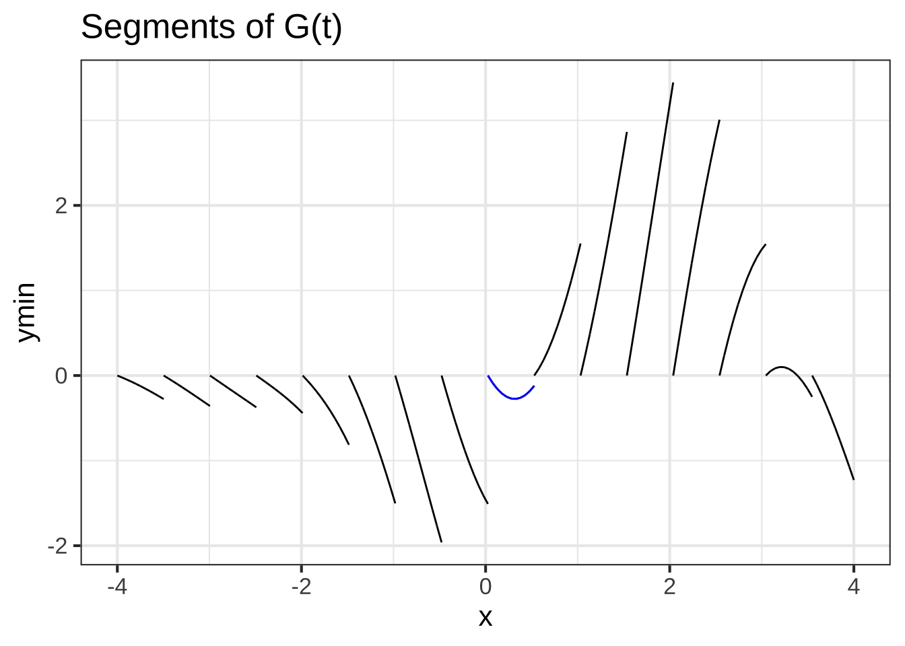

Chapter 28 Totaling the little bits
Many students wonder how it is possible to reconstruct a function \(F(x)\) from its derivative \(f(x)\). This may be especially true for those who have studied calculus previously, who may have been taught that anti-differentiation is an advanced topic and may have struggled with the algebraic methods that are traditionally emphasized many calculus courses.
The point of this short chapter is to show you that anti-differentiation is easy if you look at it the right way. As an example, consider the function \(F(x)\) shown in Figure 28.1.

Figure 28.1: Top: A function \(F(x)\). Bottom: Slicing \(F(x)\) into piecewise domains and anchoring the left-most point of each slice at 0.
Now imagine that we sliced up \(F(x)\) over small sub-domains of \(x\), as in Figure 28.1 (bottom). That is, we approximated \(F()\) piecewise locally. But we’ve broken the continuity of \(F(x)\) by moving each slice up or down so that the left-most point has value 0.
Can you reconstruct \(F(x)\) from the local segments?
Start by reading off the function value from the last point in the left-most segment. That’s been marked in Figure 28.1 with a blue dot. The function value at that dot is 7.072.
Now take the second segment. The idea is to move that segment upward until it joins the first segment at the blue dot. You can do that by adding 7.072 to the second segment. The result is shown in Figure 28.2(top).
Figure 28.2: Reconstructing the original function \(F(x)\) by moving each segment upward to meet its left neighbor. Top: The first two segments are connected. Bottom: The third segment is connected to the first two.
Now read off the new value at the end of the second segment, it’s 4.198. Add this amount to the third segment as in Figure 28.2(bottom).
Continue this process until you have reconstructed \(F(x)\) from the local segments.
You may object: “Of course you can reconstruct \(F(x)\) from the local segments, but this isn’t the same as reconstructing \(F(x)\) from its derivative \(\partial_x F(x)\).” My answer is, “That depends on how many segments you use.”
Let’s use many more segments:

Figure 28.3: Using small segments gives each segment a simple shape. Top: At width \(h=0.1\) a few of the segments look curved. Bottom: This graph zooms in on the subdomain \(0 \leq x \leq 1\) where there is a notably curved segment in the top graph. Setting \(h=0.01\) breaks up that curved segments into components well approximated by a straight line.
Notice that many of the segments are straight lines. That’s understandable, since any function looks like a straight line over a small enough domain.
Each of those straight-line segments is drawn over a domain \(x_i < x < x_i+h\) that has width \(h\). The slope of each segment is \(\partial_x F(x_i)\) and it’s height is \(h \partial_x F(x_i)\). Thus, to draw the segments we don’t need \(F(x)\), we just need \(\partial_x F(x)\).
You might continue to object, since not every one of the segments is a straight-line whose slope and height can be figured out with \(\partial_x F(x)\). That’s true in the figure because we made the segments fairly wide. We can make them as small as you like for the calculation. (The graphic would get very crowded unless we zoom in on the horizontal axis.)
Or, here is another segment drawing trick. Even the curved segments in Figure 28.3 are essentially quadratic. The derivative of each quadratic is a function of \(x\)—that’s why they curve. We can write that derivative using the first two derivatives of \(F(x)\), that is, as \(\partial_x F(x) = \partial_x F(x_i) + \partial_{xx} F(x_i) [x-x_i]\). You’ll see in Chapter XXX that we have a simple formula that will construct the individual quadratically-shaped segment from \(\partial_x F(x)\).
28.1 The notation of little bits
The standard notation for anti-differentiation can be interpreted in terms of putting together segments, or, in the words of Prof. Thompson in Calculus Made Easy, “totaling up all the little bits.” (See Section 27.5.)
Let’s assemble piece by piece the mathematical notation for “anti-differentiate \(f(x)\) to construct \(F(x)\).”
We start with the function itself: \(\large f(x)\). Remember that \(f(x)\), at each value of \(x\) will be the slope of \(F(x)\). Why? Because \(F(x)\) is the anti-derivative of \(f(x)\), so \(f(x)\) is the derivative of \(F(x)\).
Now divide the domain \(x\) into many little bits. Each of these sub-domains is \(\large dx\), a little chunk of \(x\).
On each of the little chunks, draw in \(f(x)\). Since \(f(x)\) is the slope of \(F(x)\), we will draw \(f(x)\) for any given chunk as a short line segment of that slope over the chunk. We’ll write these little bits each of which is a straight-line function, as \(\large\color{blue}{f(x) dx}\). Here’s an example where the domain \(-\pi \leq x \leq \pi\) is being split into \(dx\)’s of length 0.2.
Figure 28.4: Turning \(f(x)\) (thin black curve) into straight-line segments whose slope is given by the value of \(f()\).
- Assemble together all the \(f(x)dx\) segments from (3) to get \(F(x)\). This instruction to assemble is denoted \[\Large \color{blue}\int\]

Figure 28.5: \(\color{blue}{\int} f(x)dx\) means to assemble the straight-line pieces \(f(x) dx\) in the manner described in the previous section.
Altogether, we have:
\[\Large \underbrace{\underbrace{\LARGE\color{magenta}{\int}}_{\color{magenta}{\text{assemble}}} \underbrace{\LARGE f(x) \overbrace{\strut \overset{\strut}{dx}}^{\small \text{bits of}\ x}}_{\color{blue}{\text{the slope segments}}}}_{\text{giving}\ {\LARGE F(x)}\ \text{altogether.}}\]
In the figures, \(f(x) \equiv \cos(x)\), so the assembly \(\int f(x) dx = \sin(x)\).
28.2 Exercises
Exercise 28.02:  BhGRKU
BhGRKU
The graph shows a function \(G(t)\) broken up into segments. Draw \(G(t)\) by putting together the segments.
 The segment in blue is obviously not a straight line. As you can see, the blue segment spans the sub-domain \(0 \leq x \leq 0.5\).
How do we draw that segment knowing just \(\partial_t G(t)\) and therefore \(\partial_{tt} G(t)\).
The values of those two functions at \(x=0\) are \(\partial_t G(0) = -1.988\) and \(\partial_{tt} G(0) - 5.599\). And, since all the segments have their left end anchored at a vertical value of zero, you know \(G(0) = 0\).
Using Taylor series, construct a function centered at \(x=0\). Plot it out and see that it reconstructs the blue segment on the domain \(0 \leq x \leq 0.5\).